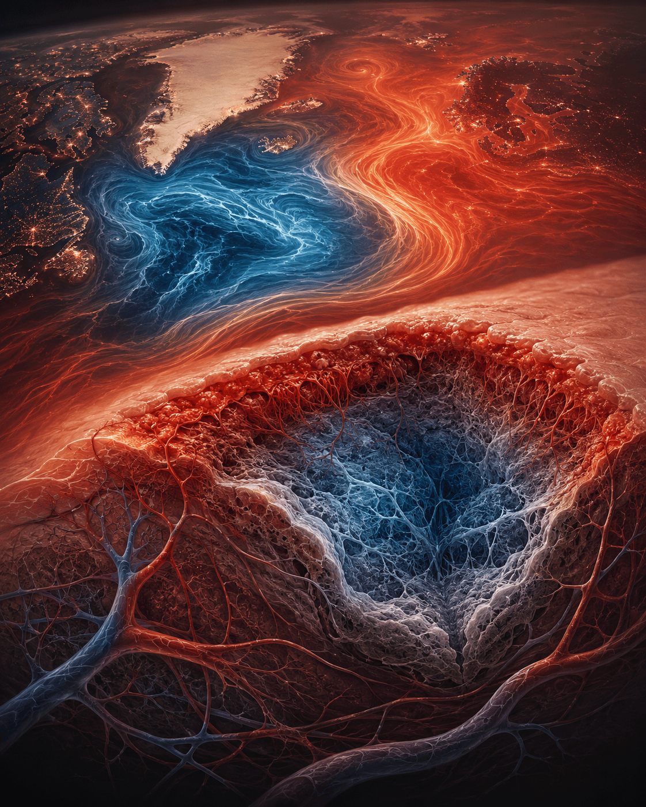
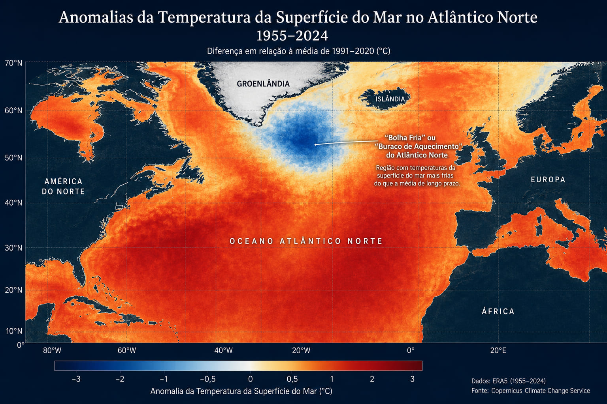
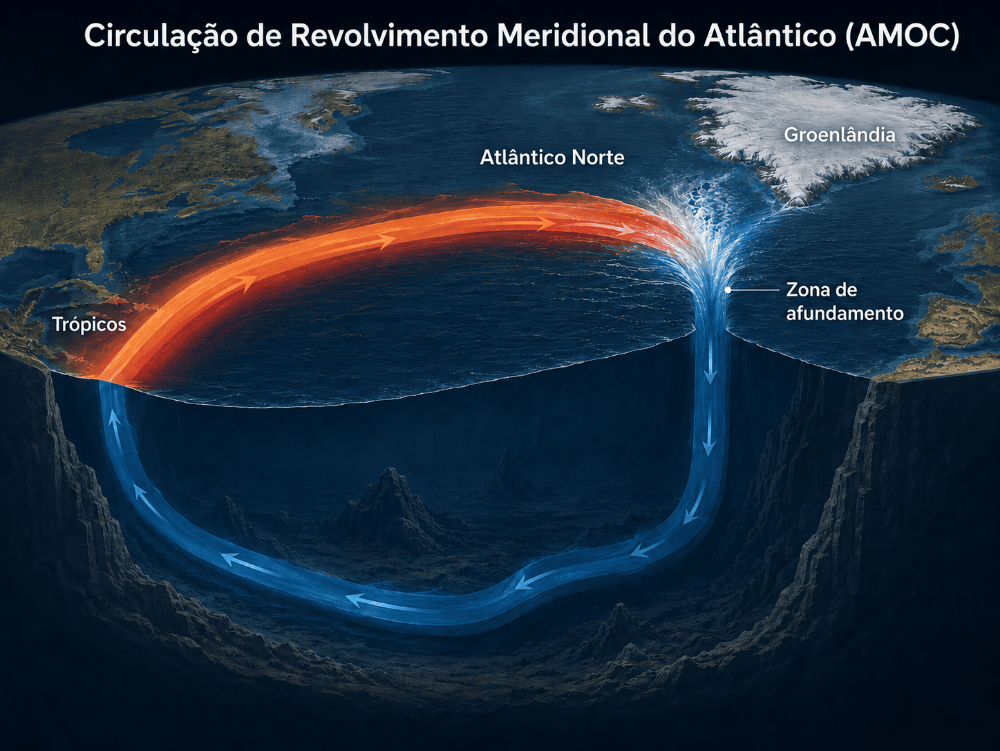
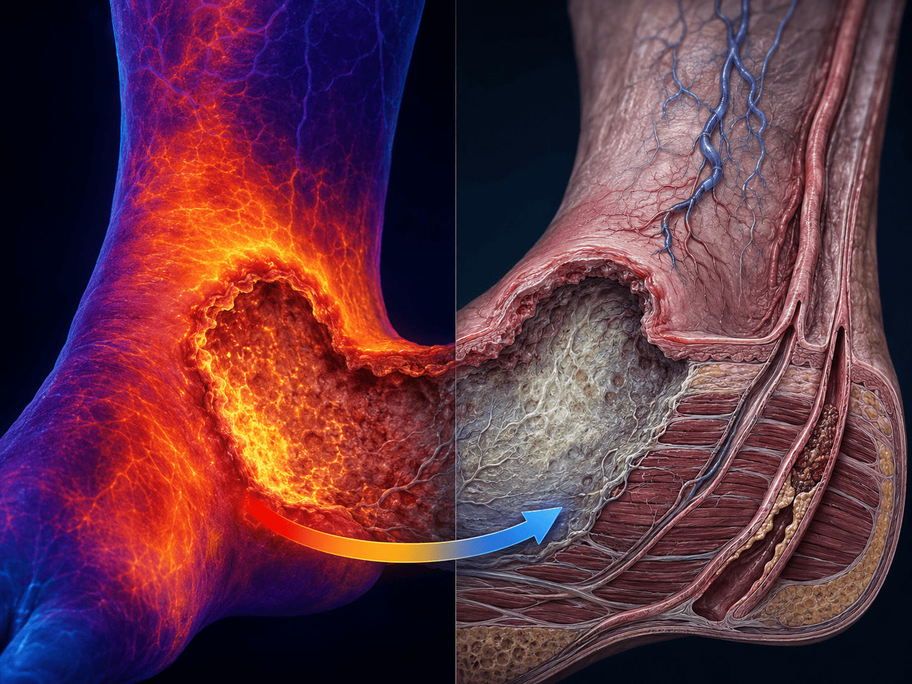

A pergunta que une dois mundos
Uma superfície que mente
Há um paradoxo no Atlântico Norte: enquanto o resto dos oceanos aquece, uma região ao sul da Groenlândia esfria. Há um paradoxo análogo na clínica de feridas crônicas: a lesão de etiologia mista pode apresentar borda quente pela inflamação venosa e, ao mesmo tempo, leito isquêmico real quando há comprometimento arterial associado. Em ambos os casos, o que se vê na superfície não revela — e às vezes oculta — o processo que corre nas profundezas.

Esta peça propõe uma analogia entre a Cold Blob do Atlântico Norte e a úlcera de perna — especialmente a úlcera mista, de etiologia venosa e arterial concomitante — para iluminar, por contraste e semelhança, o papel central da circulação e da temperatura na manutenção de sistemas vivos e planetários.
A analogia foi inspirada a partir da compreensão de uma observação sobre feridas crônicas mistas (venosa e arterial) da Profª Drª Adrize Rutz Porto — Professora da Faculdade de Enfermagem da UFPel, coordenadora do projeto Amor-à-Pele e do PET-Saúde Digital, Editora-chefe da Journal of Nursing and Health (JONAH) e líder do Núcleo de Estudos em Práticas de Saúde e Enfermagem (NEPEn).[1]
Parte I — Oceanografia
O lugar onde o oceano para de aquecer
Desde o século XIX, os oceanos da Terra aqueceram em média. Exceto por uma região: o Atlântico subpolar, ao sul da Groenlândia e da Islândia. Ali, a temperatura caiu cerca de 1°C — um comportamento que desafiou décadas de modelos climáticos e que foi chamado de Cold Blob ou North Atlantic Warming Hole.
"O resfriamento não vem da superfície. Vem das profundezas — de uma corrente que perdeu a força de entregar calor."
Um estudo publicado no Geophysical Research Letters em 2026, liderado por Stefan Rahmstorf (Instituto de Potsdam), encerrou o debate sobre a causa: trata-se de um fenômeno oceânico profundo, não atmosférico. A queda no conteúdo de calor foi detectada nos primeiros 1.000 metros de profundidade — exatamente onde atua a AMOC.[2]

A queda no conteúdo de calor foi detectada nos primeiros 1.000 metros de profundidade — exatamente onde a AMOC atua. Isso tornou insustentável a hipótese de que a causa estava na superfície. O mesmo princípio vale clinicamente: o sinal visível na pele raramente é a causa — é o índice de algo mais profundo.[2]
O Sistema Circulatório do Planeta
A AMOC: a corrente que aquece um continente
A Circulação Meridional de Retorno do Atlântico (AMOC) é uma rede de correntes oceânicas que funciona como esteira transportadora: leva água quente superficial dos trópicos para o norte e retorna água fria e densa pelo fundo. É graças a ela que Londres, na mesma latitude que Quebec, tem apenas 3 dias de geada por ano — contra 99 no Canadá.[3]

Quando a AMOC enfraquece, menos calor chega ao Atlântico Norte. A Cold Blob não é um mistério independente: é a impressão digital de uma corrente que perdeu força. As projeções de Rahmstorf et al. indicam que a AMOC pode perder entre 43% e 59% de sua força até 2100 — valores 60% acima das estimativas anteriores.[2]
Parte II — Clínica de Feridas
Úlceras de perna: três etiologias, uma superfície enganosa
As úlceras crônicas de membros inferiores têm etiologias distintas — e confundi-las tem consequências graves. As úlceras venosas representam aproximadamente 80–85% dos casos; as arteriais, 5–10%; e as mistas, a fração restante — mas clinicamente desafiadora e de crescente relevância diagnóstica.[4]
O paradoxo temperatura/circulação — revisão clínica
"A úlcera venosa pura inflama e aquece a superfície por estase —
a arterial esfria e isquemia por falta de aporte —
e a mista pode apresentar os dois sinais ao mesmo tempo."
🔥 Venosa Pura
A lesão e a pele perilesional apresentam-se quentes, edemaciadas, ruborizadas. A hipertensão venosa crônica gera inflamação por estase: fibrinogênio extravasa, hemácias depositam-se, inflamação crônica aquece a borda.
O sangue arterial chega — o problema é que não consegue retornar pela veia. Frio palpável não é o padrão desta etiologia isolada.[4]
❄️ Arterial Pura
Pele fria, atrófica, cianótica. Pulsos diminuídos ou ausentes. Dor intensa ao elevar a perna. A artéria obstruída (aterosclerose, DAP) não entrega oxigênio — o tecido isquemia, necrosa e esfria de fato.
Aqui o frio é sinal diagnóstico real. Extremidade fria com alteração de pulsos: investigar componente arterial imediatamente.[5]
🌡️ Mista (ITB < 0,9)
Coexistência de insuficiência venosa e arterial. Edema e calor inflamatório perilesional do componente venoso convivem com isquemia real do componente arterial.
Estudo de 2025 encontrou etiologia mista em 25,5% dos casos de úlcera de perna.[6] Aqui a compressão terapêutica — central no tratamento venoso — pode ser contraindicada ou requer ajuste rigoroso pelo ITB.[7]
⚠️ Nota clínica (Profª Drª Adrize Rutz Porto, UFPel, 2026): Extremidade fria, pulsos diminuídos, necrose seca e dor ao elevar a perna não são sinais de úlcera venosa pura — são indicação de investigar componente arterial. A inflamação superficial pode mascarar isquemia mais profunda. O ITB é mandatório nesse raciocínio diagnóstico.
O que torna a úlcera mista o caso mais análogo à Cold Blob é exatamente esse duplo movimento: o sinal quente de superfície (inflamação venosa) coexiste com o processo frio profundo (isquemia arterial) — assim como o Atlântico subpolar esfria abaixo enquanto a atmosfera ao redor aquece.

Há ainda uma dimensão térmica com implicação direta no cuidado: independentemente da etiologia, o leito que perdeu temperatura leva 30 a 40 minutos para retornar aos 37°C fisiológicos após a limpeza, e até 3 a 4 horas para recuperar a velocidade normal de mitose celular.[8] O uso de solução salina aquecida durante o curativo não é conforto — é biologia celular.
A Ponte Entre os Dois Mundos
O diagnóstico pelo sinal de superfície — oceânico e clínico
Assim como o clínico experiente usa a temperatura, a coloração e os pulsos da extremidade afetada para inferir o estado da circulação profunda, os cientistas usam a Cold Blob como impressão digital da AMOC — uma corrente invisível cujos efeitos se manifestam na superfície. Em ambos os casos, o sinal de superfície é o índice, não a doença.
| 🩺 Úlcera de perna (mista) | 🌊 Cold Blob / AMOC |
|---|---|
| Insuficiência venosa crônica (estase, retorno comprometido) | Enfraquecimento da AMOC (transporte de calor reduzido) |
| Insuficiência arterial periférica (aporte de O₂ reduzido) | Aquecimento global que derrete a Groenlândia (água doce desestabiliza a AMOC) |
| Borda quente (inflamação) + leito isquêmico (frio real) | Atmosfera aquecendo + Atlântico subpolar esfriando |
| ITB: índice que revela o estado arterial oculto | Temperatura da Cold Blob: fingerprint do estado da AMOC |
| Lipodermatosclerose, edema, pulsos alterados (sinais precoces) | Sinais de alerta precoce do tipping point da AMOC |
| Compressão contraindicada na isquemia grave (ITB < 0,5) | Redução de emissões: tratar a causa, não o sintoma superficial |
| Necrose, gangrena, amputação (ponto de não retorno) | Colapso irreversível da AMOC |
| Diagnóstico correto evita conduta catastrófica | Monitoramento da AMOC orienta políticas climáticas |
Na clínica
Confundir úlcera mista com venosa pura e aplicar compressão intensa pode resultar em isquemia crítica — uma conduta com consequências potencialmente catastróficas.[9] O sinal de superfície (borda quente) pode ocultar a isquemia arterial profunda.
No oceano
Tratar apenas o sintoma climático visível (temperatura superficial) sem entender a AMOC seria como tratar apenas a borda da ferida. O processo determinante está nas profundezas — e sem monitorá-lo, qualquer intervenção é insuficiente.[2]
O Ponto de Não Retorno
Quando o sistema não consegue mais se recuperar
Projeção AMOC para 2100
A força da AMOC pode reduzir-se entre 43% e 59% até o fim do século — valores 60% acima das estimativas anteriores. O equivalente clínico: isquemia crítica com ITB < 0,5, múltiplas úlceras ativas e indicação de revascularização.[2]
Em ambos os sistemas, os sinais precoces de alerta são mais úteis do que esperar o desfecho catastrófico. Na úlcera mista: pulsos alterados, ITB limítrofe, necrose incipiente. Na AMOC: variações de salinidade, dados paleoclimáticos, e a própria Cold Blob — que Rahmstorf descreve como o sinal de um sistema que se aproxima de um ponto de inflexão.[2]
Em ambos os casos, a intervenção precoce e baseada no diagnóstico correto é o que separa um desfecho gerenciável de um irreversível.
Fixação de Conhecimento
Perguntas para pensar
As questões abaixo são socráticas: não pedem uma resposta única correta, mas provocam o raciocínio por analogia e diagnóstico diferencial. Use-as individualmente ou em discussão de grupo.
Questão 1 — Analogia direta
A Cold Blob esfria enquanto o Atlântico ao redor aquece. Na clínica de feridas, qual tipo de úlcera apresenta um paradoxo análogo — e por quê esse paralelo é mais preciso com a úlcera mista do que com a venosa pura?
💡 Pense: na úlcera venosa pura, a lesão e a pele perilesional estão quentes. Onde está o "frio" que a analogia com a Cold Blob precisa? Há frio de fato, ou apenas hipóxia relativa?
Questão 2 — Diagnóstico pelo índice
Na oceanografia, a temperatura da Cold Blob é usada como "impressão digital" do estado da AMOC — uma corrente que não vemos diretamente. Na clínica, qual exame simples funciona como esse índice diagnóstico para revelar o componente arterial oculto numa úlcera de perna?
💡 Pense: o ITB (Índice Tornozelo-Braço) é ao clínico o que a temperatura da Cold Blob é ao oceanógrafo — um número de superfície que revela o estado de uma circulação profunda.
Questão 3 — Consequência de diagnóstico errado
Imagine que um profissional avalia uma úlcera de perna, encontra borda quente e edema, e conclui ser venosa pura, prescrevendo compressão intensa. Qual o risco se houver componente arterial não detectado? Qual seria o equivalente oceânico de "tratar o sintoma sem entender o sistema"?
💡 Compressão em isquemia crítica (ITB < 0,5) pode evoluir para gangrena. No clima: focar apenas em temperatura superficial sem monitorar a AMOC seria análogo.
Questão 4 — Tipping point
Tanto a AMOC quanto uma úlcera mista grave têm um "ponto de não retorno". Como você descreveria esse ponto em cada sistema? O que o monitoramento precoce — do ITB ou da Cold Blob — tem em comum como estratégia de prevenção?
💡 Na ferida: necrose extensa, amputação. No oceano: colapso da AMOC com queda de até 15°C em regiões do hemisfério norte. Ambos são evitáveis com detecção precoce do sinal profundo.
Questão 5 — Limite da analogia
Toda analogia tem limites. Na úlcera venosa pura, o mecanismo é de retorno comprometido (centrípeto). Na AMOC, é de transporte de calor para frente (centrífugo). Esse limite invalida a analogia — ou a enriquece? Como você usaria esse contraste para aprofundar a compreensão dos dois sistemas?
💡 Limites de analogias são tão didáticos quanto suas semelhanças. A diferença entre retorno venoso e transporte de calor oceânico pode ser usada para discutir as funções distintas de veias e artérias no sistema circulatório.
O que fica
A superfície sempre mente. A profundidade não.
A analogia entre a Cold Blob e a úlcera de perna — em especial a úlcera mista — aponta para um princípio diagnóstico universal: quando a superfície foge do padrão esperado, procure onde a circulação foi comprometida.
Na ferida crônica, o leito hipóxico e a extremidade isquêmica são a cicatriz de um sistema vascular que há muito sinalizava: válvulas incompetentes, artérias obstruídas, ITB em queda. No oceano, a Cold Blob é a cicatriz de uma corrente que há um século sinaliza o mesmo — com dados de temperatura desde 1870, satélites desde 1993, e testemunhos de gelo por milênios.
"Tratar o sintoma sem entender o sistema é sempre insuficiente — seja na perna de um paciente com úlcera mista, seja no Atlântico Norte."
Referências
- PORTO, A. R. Perfil acadêmico. Universidade Federal de Pelotas, Pelotas, [s. d.]. Disponível em: <https://institucional.ufpel.edu.br/servidores/id/2858>. Acesso em: 28 jun. 2026.
- RAHMSTORF, S. et al. Multidecadal Atlantic "Warming Hole" Heat Content Variations Are Caused by Ocean Heat Transport, Not by Surface Fluxes. Geophysical Research Letters, v. 53, n. 10, e2025GL118383, 28 maio 2026. DOI: 10.1029/2025GL118383. Disponível em: <https://doi.org/10.1029/2025GL118383>. Acesso em: 28 jun. 2026.
- SMART, A.; VENNER, C. A complete guide to the Atlantic Meridional Overturning Circulation (AMOC). Probable Futures, 28 abr. 2026. Disponível em: <https://probablefutures.org/perspective/...>. Acesso em: 28 jun. 2026.
- SANARMED. Úlceras venosas: o que são e os aspectos clínicos. Sanarmed, 2024. Disponível em: <https://sanarmed.com/ulceras-venosas-o-que-sao-e-as-aspectos-clinicos-colunistas/>. Acesso em: 28 jun. 2026.
- IACV. Úlcera arterial: o que é, causas e tratamento. IACV, 2024. Disponível em: <https://iacv.med.br/ulcera-arterial-o-que-e-causas-e-tratamento/>. Acesso em: 28 jun. 2026.
- ANDRADE, I. et al. Correlação entre ITB e tempo de cicatrização de úlceras de perna. Revista de Enfermagem Referência, Série VI, n. 4, 2025. Disponível em: <https://revistas.rcaap.pt/referencia/article/download/41357/30350/210810>. Acesso em: 28 jun. 2026.
- SOCIEDADE BRASILEIRA DE DERMATOLOGIA. Consenso sobre diagnóstico e tratamento das úlceras crônicas de perna. Anais Brasileiros de Dermatologia, 2020. Disponível em: <https://www.anaisdedermatologia.org.br/...>. Acesso em: 28 jun. 2026.
- BLANES, J. I. et al. Diretrizes para o Tratamento da Úlcera Venosa. Enfermería Global, n. 20, 2010. Disponível em: <https://scielo.isciii.es/pdf/eg/n20/pt_revision2.pdf>. Acesso em: 28 jun. 2026.
- INSTITUTO MEXICANO DE FLEBOLOGÍA. Úlceras venosas y arteriales: diagnóstico diferencial e ITB como imperativo de seguridad. 2025. Disponível em: <https://flebo.mx/ulceras-venosas-y-arteriales/>. Acesso em: 28 jun. 2026.
- TELESSAÚDERS-UFRGS. Como diferenciar a etiologia das úlceras crônicas dos membros inferiores. TelessaúdeRS-UFRGS, 2022. Disponível em: <https://www.ufrgs.br/telessauders/...>. Acesso em: 28 jun. 2026.
- REALCLIMATE. High-resolution 'fingerprint' images reveal a weakening AMOC. RealClimate, out. 2025. Disponível em: <https://www.realclimate.org/...>. Acesso em: 28 jun. 2026.